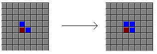
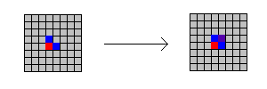
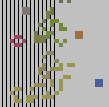

The Applet uses all the conventional rules of the Life game but also assigns the squares colour values. I had a look at LifeGenesis from the Microsoft Entertainment Pack to see how it implements colour. This version of life had two colours, red and blue. Essentially both colours are treated exactly the same. The only addition to the algorithm which the Microsoft Programmers made was in the creation of new cells. When this happens, the most common parent colour is used for the child colour:
I managed to implement the same system in my applet fairly easily, however I found it to be rather boring only having 2 colours. To 'spice it up', I decided to make the colour values continuous rather than discrete. Instead of choosing the most common parent colour, the parent colours are all added together and an average taken. This colour is used for the new cell. In essence, the cells now have a crude form of 'genetics' where new cells pick up a 'blend' of their parent cells characteristics.
Interestingly, if a random board is run for long enough, the colours tend to average out and regions develop with particular colours:
